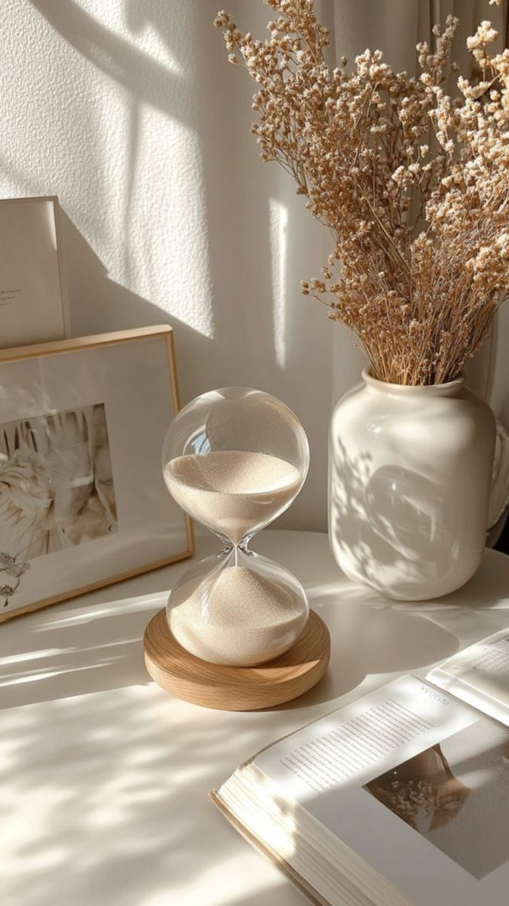
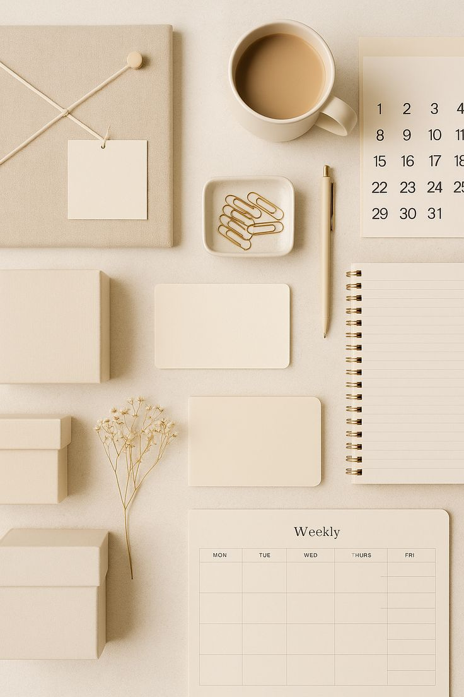
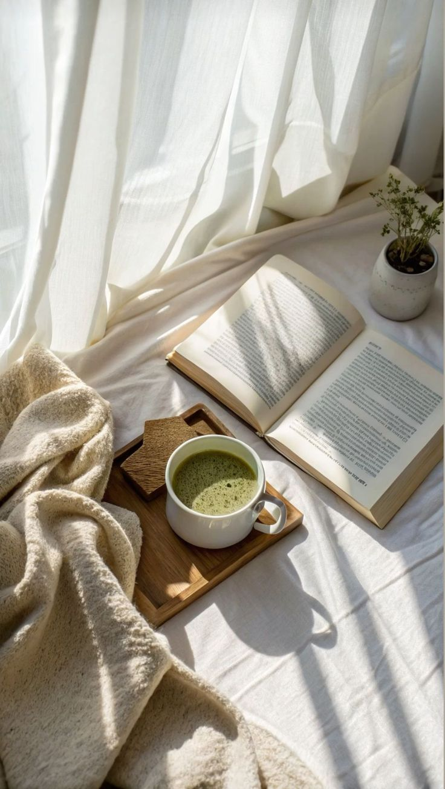

Sua casa não precisa ser perfeita.
Se hoje tudo parecer demais, não precisa dar conta de tudo. Escolha um pequeno passo, no seu ritmo — ele já conta.

Tarefas rápidas

CAPÍTULO II — ORGANIZAR
Uma semana leve cabe em pequenos gestos.
Planejar não é se cobrar. É só deixar um bilhetinho para o seu “eu” de amanhã. Mude, apague e recomece quantas vezes quiser.
Rotina diária
Seu calendário semanal
Selecione um dia para ver as tarefas.
Nenhuma tarefa deste cômodo nesta semana. Você pode deixar esse espaço livre ou adicionar uma tarefa.
Adicionar uma tarefa

INTERLÚDIO
“Descansar também é cuidar da casa — a casa que mora em você.”
Fez uma coisinha hoje? Que bonito. Não fez nada? Tudo bem também. Prepare um chá, abra a janela e deixe a luz entrar. Amanhã a gente continua.
com carinho, CleanSpace 15